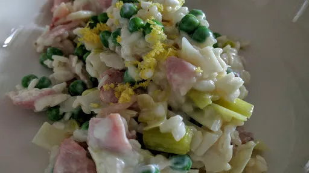

Oven-baked leek & bacon risotto

Servings: 4
Total: 40 mins
Ingredients
- 1 tbsp olive oil
- 6 rashers smoked back bacon, roughly chopped
- 2 leeks, halved lengthways and finely sliced
- 250 g risotto rice
- 700 ml hot chicken or vegetable stock
- 175 g frozen peas
- 3 tbsp soft cheese
- zest 1 lemon
Instructions
- Heat the oven to 200°C/Gas 6. Heat the
oil1 tbsp
in an ovenproof shallow pan with a lid. Add the bacon6 rashers
and fry for 2 minutes. Add the leeks2
and cook until soft, but not coloured, 4-5 minutes. Tip in the rice250 g
and cook for 1 minute more, then pour over the stock700 ml
. Cover and put in the oven for 20 minutes, stirring halfway through the cooking time.
- When the
rice250 g
is just tender and all the liquid has been absorbed, remove from the oven and stir in the peas175 g
. Return to the oven for 2 minutes more. Remove the risotto from the oven and stir through the cheese3 tbsp
. Add the lemon zest and season to serve straight away.
-
kcal
424
-
fat
14 g
-
saturates
5 g
-
carbs
55 g
-
sugar
3 g
-
fibre
5 g
-
protein
22 g
-
salt
2.34 g
BBC Good Food: One-pot Dishes
Short Link
Long Link